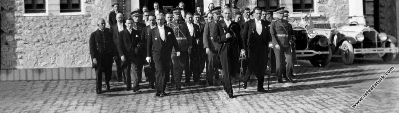

Hoşgeldiniz
Hayat Hikayesi
Mustafa Kemal Atatürk 1881 yılında Selanik’te doğdu. Ali Rıza Efendi babası,
Zübeyde Hanım ise annesidir. Mustafa Kemal Atatürk’ün eğitim aldığı okullar baştan sona
şöyledir; ilkokul eğitimini Mahalle Mektebinde ve Şemsi Efendi Okulunda, ortaokul eğitimini
Selanik Mülkiye Rüştiyesi ve Selanik Askeri Rüştiyesinde, lise eğitimini Selanik Askeri
İdadisi, üniversite eğitimini ise Harp Okulu ve Harp Akademisinde almıştır. 1893 yılında
Askeri Rüştiye’de okurken matematik öğretmeni ona Kemal ismini verdi ve böylece ismi
Mustafa Kemal oldu.
I. Dünya Savaşı nihayete erdiğinde Mondros Ateşkes antlaşması imzalanması ile vatan
topraklarını paylaşılacaktı. Fakat duruma el koyan Mustafa Kemal, 19 Mayıs 1919’da
Samsun’a çıkarak milli mücadelenin temellerini attı.23 Nisan 1920 tarihinde TBMM’nin
açılmasına önder olan Mustafa Kemal Meclis tarafından da Hükümet Başkanı seçildi. 5
Ağustos 1921’de yine Meclis tarafından Başkomutan seçildi. Sakarya Savaşı’nın
kazanılmasındaki büyük emeklerinden dolayı Gazilik unvanı ve Mareşallik rütbesi ile
şereflendirildi.
29 Ekim 1923 tarihinde Cumhuriyet ilan edildi ve Mustafa Kemal Atatürk Türkiye
Cumhuriyeti’nin ilk Cumhurbaşkanı koltuğuna oturdu. 1934 yılında Gazi Mustafa Kemal’e
meclis “Atatürk” soyadını lâyık gördü.
10 Kasım 1938 tarihinde Dolmabahçe Sarayı’nda hayatına veda etti. Tüm ülkeyi yasa
boğdu. Ancak inkılapları ve ülkemize kazandırdıklarıyla kalbimizde sonsuzluğu ulaşmış bir
liderdir.